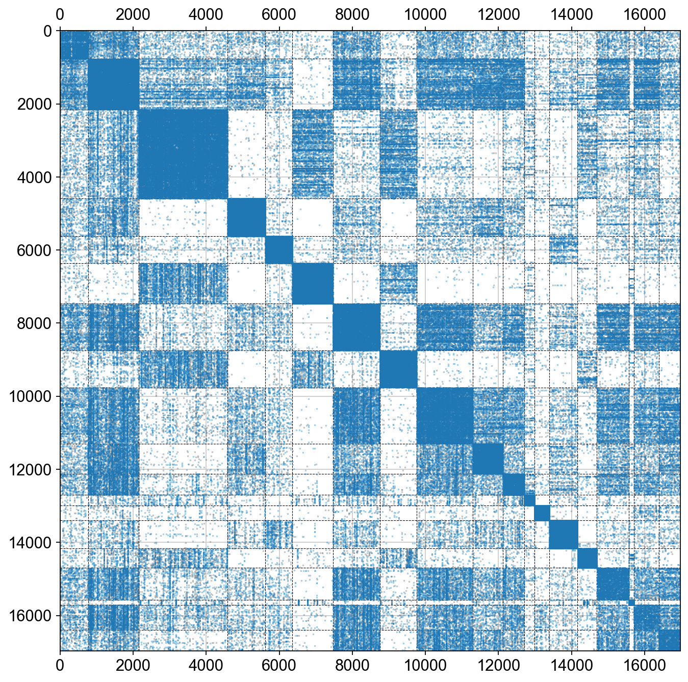
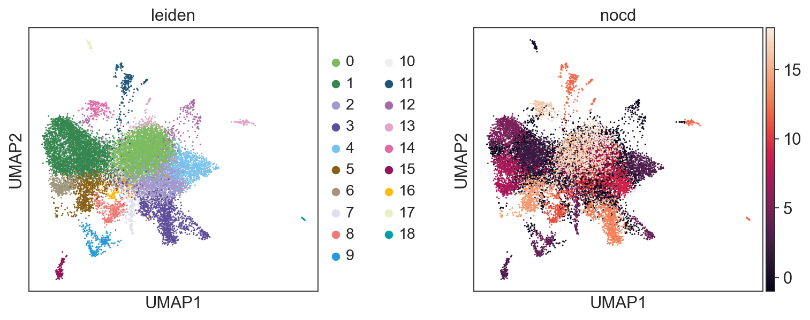

Single Tutorial: Overlapping cell_type Detection with Graph Neural Networks
Droplet based single cell transcriptomics has recently enabled parallel screening of tens of thousands of single cells. Clustering methods that scale for such high dimensional data without compromising accuracy are scarce.
This tutorial focuses on how to cluster the cell with overlapping and identify the cell with multi-fate
Part.1 Data preprocess
In this part, we perform preliminary processing of the data, such as normalization and logarithmization, in order to make the data more interpretable
[1]:
import Pyomic
import anndata
import scanpy as sc
import matplotlib.pyplot as plt
import numpy as np
import pandas as pd
%matplotlib inline
/Users/fernandozeng/miniforge3/envs/django/lib/python3.8/site-packages/tqdm/auto.py:22: TqdmWarning: IProgress not found. Please update jupyter and ipywidgets. See https://ipywidgets.readthedocs.io/en/stable/user_install.html
from .autonotebook import tqdm as notebook_tqdm
[2]:
#param for visualization
sc.settings.verbosity = 3 # verbosity: errors (0), warnings (1), info (2), hints (3)
sc.settings.set_figure_params(dpi=80, facecolor='white')
[8]:
from matplotlib.colors import LinearSegmentedColormap
sc_color=['#7CBB5F','#368650','#A499CC','#5E4D9A','#78C2ED','#866017', '#9F987F','#E0DFED',
'#EF7B77', '#279AD7','#F0EEF0', '#1F577B', '#A56BA7', '#E0A7C8', '#E069A6', '#941456', '#FCBC10',
'#EAEFC5', '#01A0A7', '#75C8CC', '#F0D7BC', '#D5B26C', '#D5DA48', '#B6B812', '#9DC3C3', '#A89C92', '#FEE00C', '#FEF2A1']
sc_color_cmap = LinearSegmentedColormap.from_list('Custom', sc_color, len(sc_color))
[3]:
adata = anndata.read('sample/rna.h5ad')
adata
[3]:
AnnData object with n_obs × n_vars = 22679 × 25596
obs: 'Type'
[4]:
adata=Pyomic.single.scanpy_lazy(adata)
filtered out 1234 cells that have less than 200 genes expressed
filtered out 4074 genes that are detected in less than 3 cells
/Users/fernandozeng/miniforge3/envs/django/lib/python3.8/site-packages/scanpy/preprocessing/_normalization.py:170: UserWarning: Received a view of an AnnData. Making a copy.
view_to_actual(adata)
normalizing counts per cell
finished (0:00:00)
extracting highly variable genes
finished (0:00:02)
--> added
'highly_variable', boolean vector (adata.var)
'means', float vector (adata.var)
'dispersions', float vector (adata.var)
'dispersions_norm', float vector (adata.var)
regressing out ['total_counts', 'pct_counts_mt']
finished (0:00:14)
computing PCA
Note that scikit-learn's randomized PCA might not be exactly reproducible across different computational platforms. For exact reproducibility, choose `svd_solver='arpack'.`
on highly variable genes
with n_comps=100
finished (0:00:05)
computing neighbors
using 'X_pca' with n_pcs = 50
finished: added to `.uns['neighbors']`
`.obsp['distances']`, distances for each pair of neighbors
`.obsp['connectivities']`, weighted adjacency matrix (0:00:10)
running Leiden clustering
finished: found 19 clusters and added
'leiden', the cluster labels (adata.obs, categorical) (0:00:01)
running PAGA
finished: added
'paga/connectivities', connectivities adjacency (adata.uns)
'paga/connectivities_tree', connectivities subtree (adata.uns) (0:00:00)
--> added 'pos', the PAGA positions (adata.uns['paga'])
computing UMAP
finished: added
'X_umap', UMAP coordinates (adata.obsm) (0:00:07)
Part.2 Overlapping Community Detection
In this part, we perform a graph neural network (GNN) basedmodel for overlapping community detection in scRNA-seq.

[5]:
scbrca=Pyomic.single.scnocd(adata)
scbrca.matrix_transform()
scbrca.matrix_normalize()
scbrca.GNN_configure()
scbrca.GNN_preprocess()
scbrca.GNN_model()
scbrca.GNN_result()
scbrca.GNN_plot()
#scpbmc.calculate_nocd()
scbrca.cal_nocd()
Epoch 0, loss.full = 0.7881, nmi = 0.01
Epoch 25, loss.full = 0.3860, nmi = 0.11
Epoch 50, loss.full = 0.3193, nmi = 0.23
Epoch 75, loss.full = 0.2935, nmi = 0.25
Epoch 100, loss.full = 0.2822, nmi = 0.25
Epoch 125, loss.full = 0.2747, nmi = 0.25
Epoch 150, loss.full = 0.2723, nmi = 0.25
Epoch 175, loss.full = 0.2716, nmi = 0.25
Epoch 200, loss.full = 0.2701, nmi = 0.25
Epoch 225, loss.full = 0.2693, nmi = 0.26
Epoch 250, loss.full = 0.2689, nmi = 0.25
Epoch 275, loss.full = 0.2700, nmi = 0.25
Epoch 300, loss.full = 0.2690, nmi = 0.26
Epoch 325, loss.full = 0.2688, nmi = 0.25
Epoch 350, loss.full = 0.2680, nmi = 0.25
Epoch 375, loss.full = 0.2680, nmi = 0.25
Epoch 400, loss.full = 0.2671, nmi = 0.25
Epoch 425, loss.full = 0.2669, nmi = 0.25
Epoch 450, loss.full = 0.2669, nmi = 0.25
Epoch 475, loss.full = 0.2685, nmi = 0.25
Epoch 500, loss.full = 0.2667, nmi = 0.25
Final nmi = 0.252
......add nocd result to adata.obs

[10]:
scpbmc.calculate_nocd()
......add nocd result to adata.obs
Part.3 Visualization
In this part, we visualized the overlapping and non-overlapping cell.
[13]:
sc.pl.umap(scbrca.adata, color=['leiden','nocd'],wspace=0.4,palette=sc_color)

zero means the cell related to overlap
[14]:
sc.pl.umap(scbrca.adata, color=['leiden','nocd_n'],wspace=0.4,palette=sc_color)
WARNING: Length of palette colors is smaller than the number of categories (palette length: 28, categories length: 575. Some categories will have the same color.

[ ]: